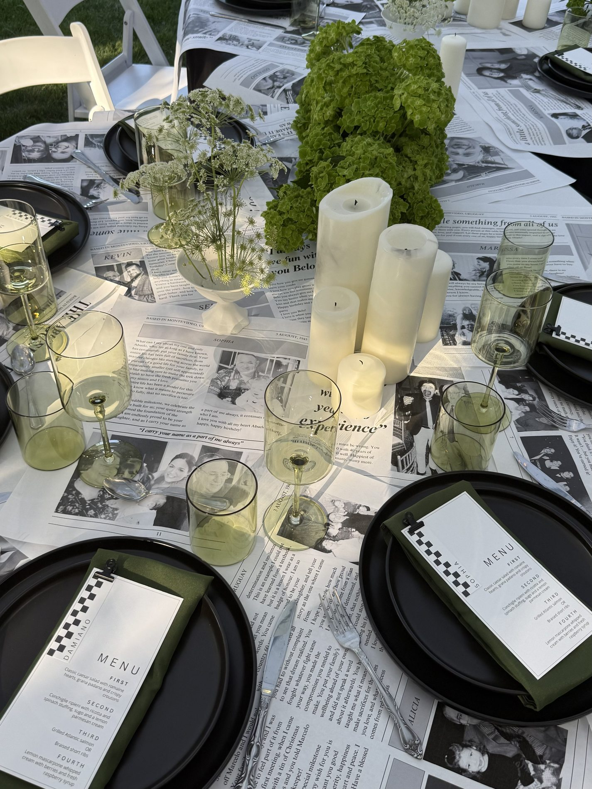

A PERSONAL CELEBRATION
A Milestone in Bloom
Carlos’s 80th birthday
A little black and white, a little garden green, and the kind of thoughtful details that tell a family story
Explore the photographs
BY SOPHIA / SELECTED CELEBRATIONSA CLOSER LOOK
The story
behind the flowers
For this 80th birthday celebration, we created a tablescape that balanced sophistication with sentiment. Inspired by the host’s love of storytelling, custom-printed newspapers filled with messages from family and friends became one-of-a-kind table coverings. Along the caterpillar-style table, an artfully winding arrangement of green hydrangeas brought fresh colour to the monochrome setting, while clusters of white pillar candles added warmth and elegance. The result was a deeply personal celebration where thoughtful details and refined floral design came together to honour 80 remarkable years.
THE COLLECTION
In all its details
05 photographs
SOMETHING BEAUTIFUL STARTS HERE